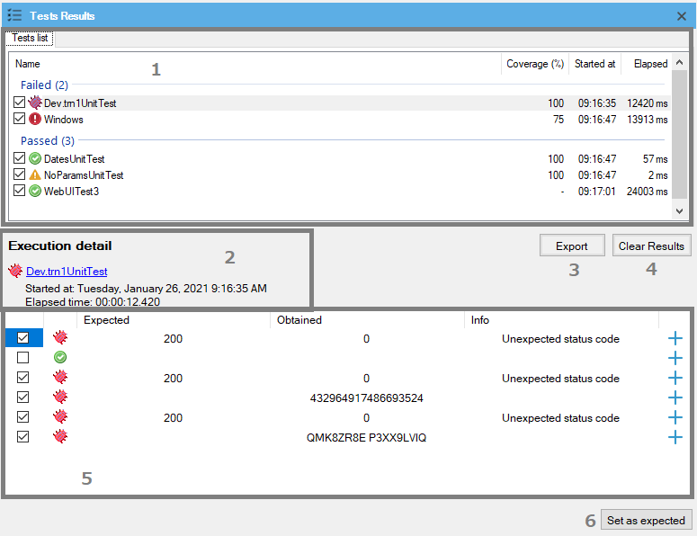
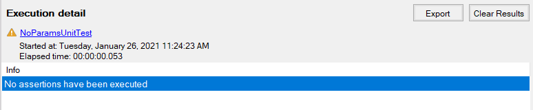

Test execution results are shown in the Test Results window.

In this section, a list of the executed tests is shown. At first, the failed tests are listed and at last, the passed tests are listed. For each one the information displayed is:
- Check box: all tests are checked by default. Useful to do actions (i.e. Export Results) over the selected tests
- Tooltip: indicates the type of the hovered test (Web UI Test, Unit Test, or SD UI Test)
- Icon: status of the current test (ran with an exception, ran with errors, ran with warnings only, or ran successfully)
- Name column: shows the qualified name of the test. Click to show its details on Commands + Assertions detail section and double click it to open the test
- Coverage column: coverage percentage that the test made of the called object/s. See Test Coverage article.
- Started at column: time when the test started its execution
- Elapsed column: elapsed time in milliseconds for the test execution
In this section, detailed information about the test selected in the Tests List section is shown.
When clicked, if there is at least one test result checked on the Test list, a File System window is prompt to select a path and file name to export the selected tests in HTML format.
If clicked, all Test Results window sections are cleared, leaving it empty of any test result being displayed.
In this section, a list of the executed testing actions is shown. For unit tests, this means assertions only and an exception if occurred. For Web UI Tests, besides assertions and the exception, all commands are shown. If no step is executed for a test, then this section is shown as follows:

Since the information being displayed is different depending on the selected test type, here are presented separately.
- Check box: to select assertion results (see Set as expected button below)
- Assertion result: it shows the assertion result. Typically error or success
- Expected value: the expected value, the first parameter of assertions
- Obtained value: the obtained value, the second parameter of assertions
- Info: information added by the user, useful to identify the assertion made or just add information about the test case for example
- View more: Click on these buttons to open a comparer window to see differences between expected and obtained values in a better way, using the GeneXus comparer tab
- Step result: an image stating the execution result of the step
- Step: executed command name and the parameters used for it. Also, assertions are considered steps for Web UI tests
- Info: For assertions is shown the same as the Info column for unit tests. For web commands, this column is used for failure messages or similar
- Elapsed: the elapsed time for the command
- View more: for assertions and exceptions, a + sign is shown. If this button is clicked for an assertion, then the assertion comparer is opened like explained in the Unit Test columns sections. If it is an exception, then a tab showing the stack trace is displayed. For commands, depending on the configuration for the KB, an image icon is shown. If this icon is clicked, then the screenshot related to that command is opened in a new tab
If clicked, all assertion results checked are used to replace obtained values on the current execution as expected values in the appropriate Data Provider. The goal of this feature is to be used when it is known as a fact that the tested object works as expected, so the obtained results are correct and not the expected values. For this reason, only failed assertions are checked by default.
In order for this feature to work properly, the assertion message must follow the format: TestCaseId.ExpectedFieldName: ...
Supported types to use with this feature are:
- Boolean
- Date
- DateTime
- Varchar, LongVarchar, Character
- Plain SDTs
- GUID
- Numeric
- Blob
Availability: this feature is available since GeneXus 17 upgrade 2.
|